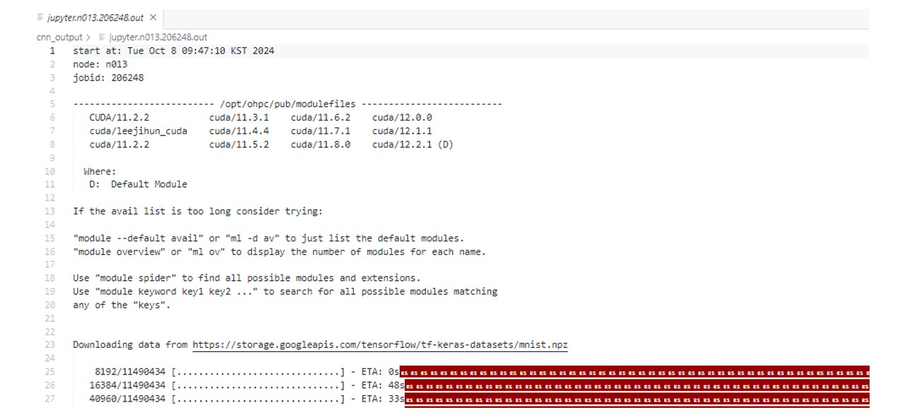
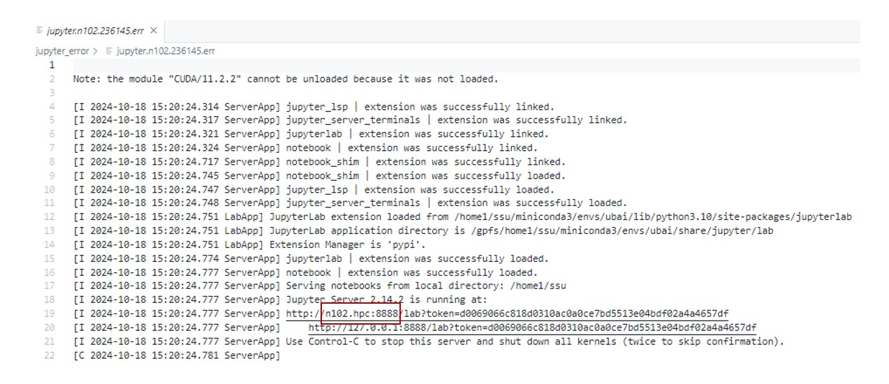
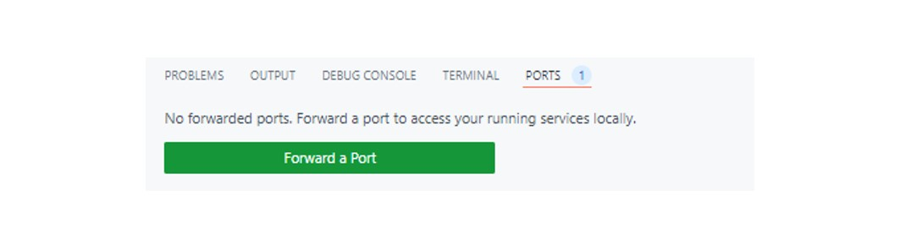
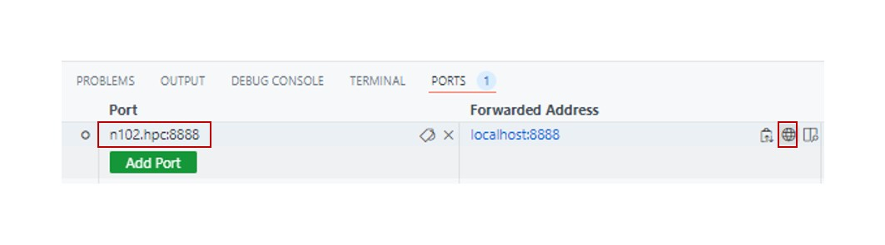
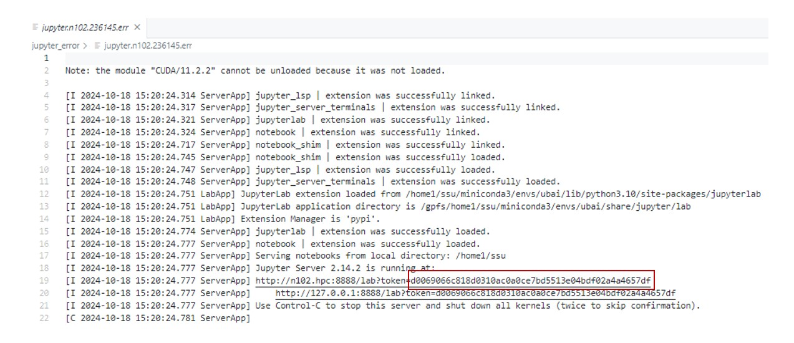
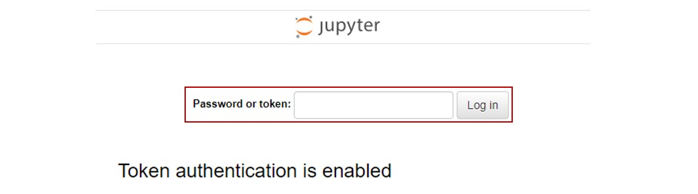
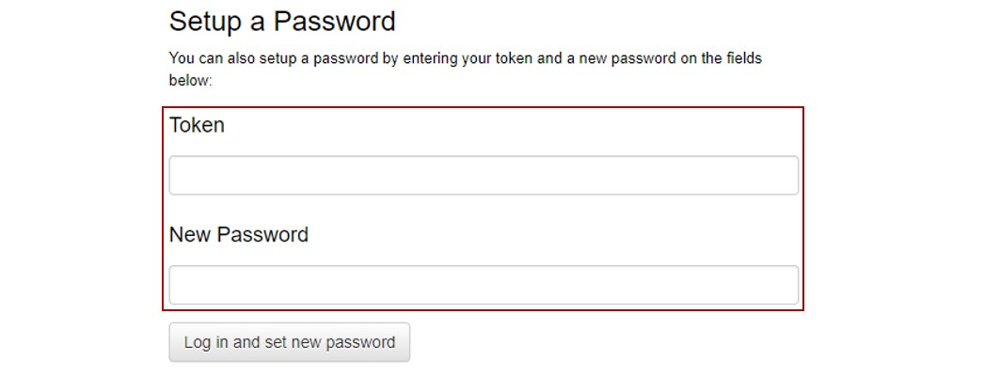
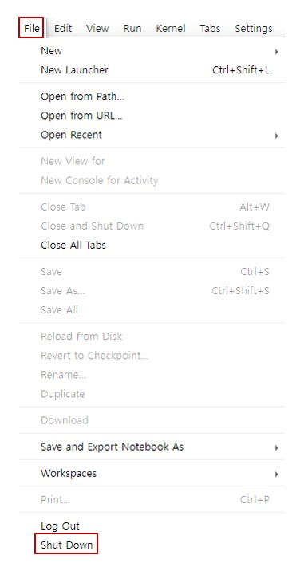

#!/bin/bash
#SBATCH --nodes=1
#SBATCH --partition=gpu2
#SBATCH --cpus-per-task=56
#SBATCH --gres=gpu:4
#SBATCH --job-name=UBAIJOB
#SBATCH -o ./결과값 도출 지정 폴더 이름/jupyter.%N.%j.out # STDOUT
#SBATCH -e ./결과값 도출 지정 폴더 이름/jupyter.%N.%j.err # STDERR
echo "start at:" `date`
echo "node: $HOSTNAME"
echo "jobid: $SLURM_JOB_ID"
module unload CUDA/11.2.2
module load cuda/11.8.0
python cnn.py 12 256 'relu'Chapter4. Python 실행
Python을 실행하는 방법은 두 가지가 있습니다.
첫 번째는 Shell 파일을 이용하여 Python 배치 파일을 실행하는 방법입니다. 두 번째는 Shell 파일을 이용하여 Jupyter Notebook에 웹 접속 후, Python 파일을 실행하는 방법입니다.
두 방법 중 한 가지의 방법을 선택하셔서 실행하시면 됩니다.
1. BASH 배치 파일 실행
Bash 창에서 배치 파일을 실행하여 파이썬 프로젝트를 실행할 수 있습니다.
작업(job) 실행 후, 최대 이틀 동안 실행 가능합니다. 시뮬레이션이나 실험을 진행함에 있어 시간이 더 걸릴 것으로 예상된다면 관리자 메일(ubaisysadmin@uos.ac.kr)에 문의하셔서 최대 진행되는 노드의 진행 시간을 더 늘릴 수 있습니다.
최대 진행 시간은 일주일입니다.
1.1 배치 파일 생성
생성한 배치 파일의 내용은 아래와 같이 입력될 수 있습니다.
아래의 사항을 본인의 작업(job)에 맞게 입력한 후, 본인이 원하는 파일의 이름을 지정하여 filename.sh 형식으로 파일을 저장합니다. 예를 들어 아래의 Shell 파일을 python_project.sh로 저장합니다.
파일명이 .sh 형식인지 반드시 확인하세요.
결과값 도출 지정 폴더 이름을 반드시 지정해주세요. 각각 결과 값 폴더를 따로따로 만들어주거나 아니면 동일 폴더에 지정하셔도 됩니다.
STDOUT은 결과 값 출력 파일, STDERR는 결과 값 도출 중 출력 되는 로그 파일입니다. 새 폴더를 만들기 위해서는 디렉토리(directory)에서 오른쪽 버튼을 눌러 새 폴더 만들기 버튼을 클릭하시면 됩니다.
각 라인들의 의미는 다음과 같습니다.
✔ #SBATCH --nodes=1 총 필요 노드 수를 지정하는 명령어이며, 노드는 자동으로 컴퓨터가 배정해줍니다. nodes=1은 노드를 한 개만 사용하겠다는 의미입니다.
✔ #SBATCH --partition=gpu4 사용할 Partition을 지정하는 명령어입니다. Partition 정보는 UBAI Cluster 페이지를 참고하세요.
✔ #SBATCH --cpus-per-task=14 총 필요 코어의 개수를 지정하는 명령어입니다. 노드는 n개의 코어를 가지며, 사용 노드 1개 당 몇 개의 CPU/GPU 코어를 쓸 것인지를 결정합니다. #of Cores/node 정보는 Partition 정보에서 확인할 수 있습니다. UBAI Cluster 페이지를 참고하세요.
✔ #SBATCH --gres=gpu:1 몇 개의 GPU를 사용할 것인지 지정하는 명령어입니다. CPU Partition을 선택하신 경우 해당 코드는 지워주셔야 합니다. 해당 코드는 GPU의 개수를 지정하는 명령어이기에, 에러가 발생할 수 있습니다.
✔ #SBATCH --job-name=UBAIJOB 작업 이름을 지정하는 명령어입니다.
✔ echo "start at:" 'date' 접속 날짜가 표기됩니다.
✔ echo "node: $HOSTNAME" 접속한 노드 번호가 표기됩니다.
✔ echo "jobid: $SLURM_JOB_ID" jobid가 표기됩니다.
✔ module ~ 원하는 Linux 환경을 구축할 수 있습니다. GPU 환경을 사용하고 싶은 경우에만 해당하며, GPU 환경을 사용하지 않을 경우(CPU Partition 사용) 지우셔도 무관합니다. Chapter3. 환경 구축에서 설명한 module envrionment에 해당합니다. 자세한 설명은 해당 파트에서 확인하세요.
✔ python cnn.py 12 256 'relu' 원하는 Python 파일을 실행합니다. 실행하려는 파일은 반드시 .py파일의 형태로 존재해야합니다. 위 코드에는 cnn.py로 지정하였습니다. Python의 sys 패키지를 이용한 sys.argv로 매개변수를 이용한 실행 방법을 사용하였습니다. 자세한 사항은 sys의 공식문서에서 확인할 수 있습니다. 파라미터 없이 모델을 실행하고 싶은 경우에는 python {filename}.py로 실행할 수 있습니다.
📌 참고사항
.py 파일에서 sys 패키지를 사용할 경우, 매개변수는 다음과 같이 지정됩니다.
sys.argv[0]: 파일 이름
sys.argv[n]: 원하는 파라미터 (n은 숫자를 의미합니다.)
cnn.py의 경우, 12 256 'relu'가 각각 sys.argv[1], sys.argv[2], sys.argv[3]으로 지정된 것입니다.
실행에 사용된 cnn.py의 자세한 코드는 아래에서 확인할 수 있습니다.
cnn code
import sys
import tensorflow as tf
import keras
import time
import os
from tensorflow.python.keras import layers
from keras.models import Sequential
from keras.layers import Dense, Dropout, Flatten
from keras.layers import Conv2D, MaxPooling2D
start = time.time()
img_rows = 28
img_cols = 28
(x_train, y_train), (x_test, y_test) = keras.datasets.mnist.load_data()
input_shape = (img_rows, img_cols, 1)
x_train = x_train.reshape(x_train.shape[0], img_rows, img_cols, 1)
x_test = x_test.reshape(x_test.shape[0], img_rows, img_cols, 1)
x_train = x_train.astype('float32') / 255. # 데이터 정규화
x_test = x_test.astype('float32') / 255. # 데이터 정규화
print('x_train shape:', x_train.shape)
print(x_train.shape[0], 'train samples')
print(x_test.shape[0], 'test samples')
batch_size = int(sys.argv[2])
num_classes = 10
epochs = int(sys.argv[1])
y_train = keras.utils.to_categorical(y_train, num_classes) # 학습을 위한 원핫벡터로 변경
y_test = keras.utils.to_categorical(y_test, num_classes) # 원핫벡터로 변경
model = Sequential()
model.add(Conv2D(32, kernel_size=(5, 5), strides=(1, 1), padding='same', activation='relu', input_shape=input_shape))
model.add(MaxPooling2D(pool_size=(2, 2), strides=(2, 2)))
model.add(Conv2D(64, (2, 2), activation='relu', padding='same'))
model.add(MaxPooling2D(pool_size=(2, 2)))
model.add(Dropout(0.25))
model.add(Flatten()) # fully connected layer
# 완전 연결계층의 문제점은 데이터의 형상이 무시된다.
# conv2d로 이미지의 특성들을 뽑아내고 pooling계층을 이용하여 차원을 감소시킨후 dense layer를 사용하여 감소된 차원의 feature map들을 input으로 하여 효율적 학습을 진행
model.add(Dense(1000, activation=sys.argv[3])) # -> Dense Layer와 같은 경우에는 가장 기본적인 층으로서 완전연결계층이다.
model.add(Dropout(0.5)) # 과대적합방지를 위해 사용
model.add(Dense(num_classes, activation='softmax'))
model.summary()
model.compile(loss='categorical_crossentropy', optimizer='adam', metrics=['accuracy'])
hist = model.fit(x_train, y_train, batch_size=batch_size, epochs=epochs, verbose=1, validation_data=(x_test, y_test))
score = model.evaluate(x_test, y_test, verbose=0)
print('Test loss:', score[0])
print('Test accuracy:', score[1])
end = time.time() - start
print(end)1.2 배치 파일 실행
배치 파일을 실행하기에 앞서, 본인이 생성했던 Python 가상 환경에 들어와 있는 상태인지 재 확인합니다.
이후, terminal에 sbatch 명령어를 이용하여 지정한 배치 파일명을 입력 및 실행하세요. 이는 작업(job)을 제출한다는 의미입니다.
실행 후 나온 결과 값은 작업(job)에 대한 ID이니 꼭 따로 저장하거나 메모해두시기를 요청드립니다.
sbatch filename.sh # ex) sbatch python_project.sh
※ 예시코드인 cnn.py를 정상적으로 실행하기 위해서는 추가 패키지 설치
pip install tensorflow && pip install numpy가 필요합니다.
작업(job) 제출이 정상적으로 진행되었다면, STDOUT폴더 안에 OUT 파일이 생성됩니다.
만일 OUT파일이 생성되지 않았다면, 해당 Partition의 노드에 기존 작업(job)이 모두 할당되어 수행하지 못했을 가능성이 높습니다. 이 경우 terminal에 squeue 명령어를 입력하시고, 본인의 ID를 찾습니다.
보통 배정이 되어있다면 정상적으로 n001, n002 … 으로 노드에 배정되어 있지만, 배정되지 않았을 경우 ( Resources, Priority )라는 메시지를 볼 수 있습니다. 그런 경우 다른 노드가 일이 끝나는 것을 기다리거나, 해당 파티션이 아닌 다른 파티션을 이용하여 노드를 배정받아야 합니다.
다른 파티션을 이용하기 위해서는 Partition 목록에서 Partition과 cpus-per-task, gpu 갯수를 Partition에 맞게 수정하여 작업(job)을 다시 제출하셔야 합니다.
이제 STDOUT폴더에 생성된 실행 결과 OUT파일을 확인할 수 있습니다.

2. Jupyter Notebook 웹 실행
Jupyter notebook을 웹에서 실행하여 파이썬 프로젝트를 실행할 수 있습니다.
작업(job) 실행 후, 최대 이틀 동안 실행 가능합니다. 시뮬레이션이나 실험을 진행함에 있어 시간이 더 걸릴 것으로 예상된다면 관리자 메일(ubaisysadmin@uos.ac.kr)에 문의하셔서 최대 진행되는 노드의 진행 시간을 더 늘릴 수 있습니다.
최대 진행 시간은 일주일입니다.
2.1 배치 파일 생성
생성한 배치 파일의 내용은 아래와 같이 입력될 수 있습니다.
아래의 사항을 본인의 작업(job)에 맞게 입력한 후, 본인이 원하는 파일의 이름을 지정하여 filename.sh 형식으로 파일을 저장합니다. 예를 들어 아래의 Shell 파일을 jupyter_notebook.sh로 저장합니다.
파일명이 .sh 형식인지 반드시 확인하세요.
#!/bin/bash
#SBATCH --nodes=1
#SBATCH --partition=gpu4
#SBATCH --cpus-per-task=14
#SBATCH --gres=gpu:1
#SBATCH --job-name=UBAIJOB
#SBATCH -o ./결과값 도출 지정 폴더 이름/jupyter.%N.%j.out # STDOUT
#SBATCH -e ./결과값 도출 지정 폴더 이름/jupyter.%N.%j.err # STDERR
echo "start at:" `date`
echo "node: $HOSTNAME"
echo "jobid: $SLURM_JOB_ID"
module unload CUDA/11.2.2
module load cuda/11.8.0
python -m jupyter lab $HOME \
--ip=0.0.0.0 \
--no-browser결과값 도출 지정 폴더 이름을 반드시 지정해주세요. 각각 결과 값 폴더를 따로따로 만들어주거나 아니면 동일 폴더에 지정하셔도 됩니다.
STDOUT은 결과 값 출력 파일, STDERR는 결과 값 도출 중 출력 되는 로그 파일입니다. 새 폴더를 만들기 위해서는 디렉토리(directory)에서 오른쪽 버튼을 눌러 새 폴더 만들기 버튼을 클릭하시면 됩니다.
각 라인들의 의미는 다음과 같습니다.
✔ #SBATCH --nodes=1 총 필요 노드 수를 지정하는 명령어이며, 노드는 자동으로 컴퓨터가 배정해줍니다. nodes=1은 노드를 한 개만 사용하겠다는 의미입니다.
✔ #SBATCH --partition=gpu4 사용할 Partition을 지정하는 명령어입니다. Partition 정보는 UBAI Cluster 페이지를 참고하세요.
✔ #SBATCH --cpus-per-task=14 총 필요 코어의 개수를 지정하는 명령어입니다. 노드는 n개의 코어를 가지며, 사용 노드 1개 당 몇 개의 CPU/GPU 코어를 쓸 것인지를 결정합니다. #of Cores/node 정보는 Partition 정보에서 확인할 수 있습니다. UBAI Cluster 페이지를 참고하세요.
✔ #SBATCH --gres=gpu:1 몇 개의 GPU를 사용할 것인지 지정하는 명령어입니다. CPU Partition을 선택하신 경우 해당 코드는 지워주셔야 합니다. 해당 코드는 GPU의 개수를 지정하는 명령어이기에, 에러가 발생할 수 있습니다.
✔ #SBATCH --job-name=UBAIJOB 작업 이름을 지정하는 명령어입니다.
✔ echo "start at:" 'date' 접속 날짜가 표기됩니다.
✔ echo "node: $HOSTNAME" 접속한 노드 번호가 표기됩니다.
✔ echo "jobid: $SLURM_JOB_ID" jobid가 표기됩니다.
✔ module ~ 원하는 Linux 환경을 구축할 수 있습니다. GPU 환경을 사용하고 싶은 경우에만 해당하며, GPU 환경을 사용하지 않을 경우(CPU Partition 사용) 지우셔도 무관합니다. Chapter3. 환경 구축에서 설명한 module envrionment에 해당합니다. 자세한 설명은 해당 파트에서 확인하세요.
✔ python -m jupyter lab $HOME \ --ip=0.0.0.0 \ --no-browse Jupyter notebook을 실행하는 코드입니다.
2.2 배치 파일 실행
배치 파일을 실행하기에 앞서, 본인이 생성했던 Python 가상 환경에 들어와 있는 상태인지 재 확인합니다.
이후, terminal에 sbatch 명령어를 이용하여 지정한 배치 파일명을 입력 및 실행하세요. 이는 작업(job)을 제출한다는 의미입니다.
실행 후 나온 결과 값은 작업(job)에 대한 ID이니 꼭 따로 저장하거나 메모해두시기를 요청드립니다.
sbatch filename.sh # ex) sbatch jupyter.sh 작업(job) 제출이 정상적으로 진행되었다면, STDOUT폴더 안에 OUT 파일이 생성됩니다.
만일 OUT파일이 생성되지 않았다면, 해당 Partition의 노드에 기존 작업(job)이 모두 할당되어 수행하지 못했을 가능성이 높습니다. 이 경우 terminal에 squeue 명령어를 입력하시고, 본인의 ID를 찾습니다.
보통 배정이 되어있다면 정상적으로 n001, n002 … 으로 노드에 배정되어 있지만, 배정되지 않았을 경우 ( Resources, Priority )라는 메시지를 볼 수 있습니다. 그런 경우 다른 노드가 일이 끝나는 것을 기다리거나, 해당 파티션이 아닌 다른 파티션을 이용하여 노드를 배정받아야 합니다.
다른 파티션을 이용하기 위해서는 Partition 목록에서 Partition과 cpus-per-task, gpu 갯수를 Partition에 맞게 수정하여 작업(job)을 다시 제출하셔야 합니다.
이제 생성된 ERR파일을 확인하고, Jupyter Notebook을 웹으로 실행시켜보겠습니다.
2.3 포트 포워딩
STDERR폴더에 생성되어있는 ERR 파일을 확인합니다.
빨간색 박스 안의 부분을 복사하세요. 
VScode의 하단에 PORTS 탭을 클린한 후, Forward a Port를 클릭합니다. 
2에서 복사한 코드는 Port에 붙여넣은 후, Open in Browser를 클릭합니다. 
웹에서 Jupyter 환경에 접속됩니다.
2.4 Jupyter Notebook 로그인
가장 처음 Jupyter 환경에 로그인하게 된다면, 다음과 같은 화면을 볼 수 있습니다. Jupyter Notebook의 접속방식으로는 두 가지 방법이 있습니다. 토큰 접속과 패스워드 접속입니다.
1. 토큰 접속
STDERR폴더에 생성되어있는 ERR 파일에는 Token 값도 함께 포함되어있습니다. 
빨간색 박스 안의 부분이 Token에 해당합니다. 이 Token을 저장한 후, Password에 붙여 넣어 로그인합니다. 
만일 1번의 방식을 사용했다면, 재접속 시에도 Token을 매번 입력해주어야합니다.
2. 패스워드 접속
Token을 저장한 후, Token에 붙여 넣고 New Password에 본인이 원하는 Password를 지정하여 입력합니다. 
만일 2번의 방식을 사용했다면, 재접속 시에는 이 때 지정한 Password 입력 화면이 뜨게 됩니다.
위 과정들을 모두 진행했다면 정상적으로 Jupyter Notebook이 구동될 것입니다.
2.5 Jupyter Notebook 작업 마치기
반드시 Jupyter Nobetook을 이용한 작업을 모두 끝낸 후에는 File → Shut Down을 눌러주거나, VScode의 terminal에서 scancel {job_ID} 명령어를 실행해주어야합니다. 이 때, job_ID는 앞서 배치에서 지정되었던 job_ID입니다.
이는 작업(job)을 마치고 노드를 비워준다는 의미입니다. 노드가 비워져야 다음 사람이 사용할 수 있으니 유의바랍니다.
